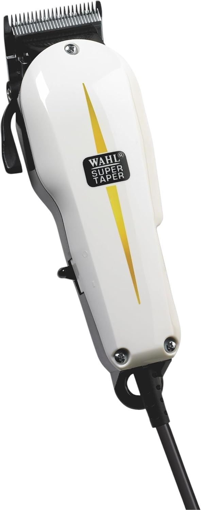
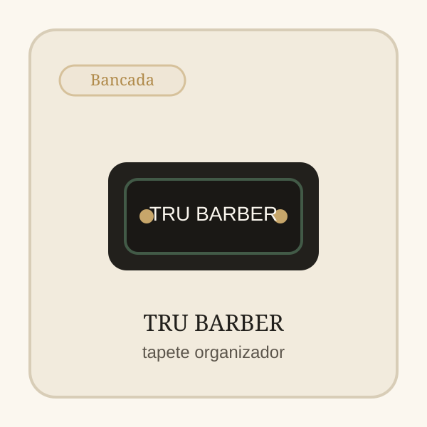
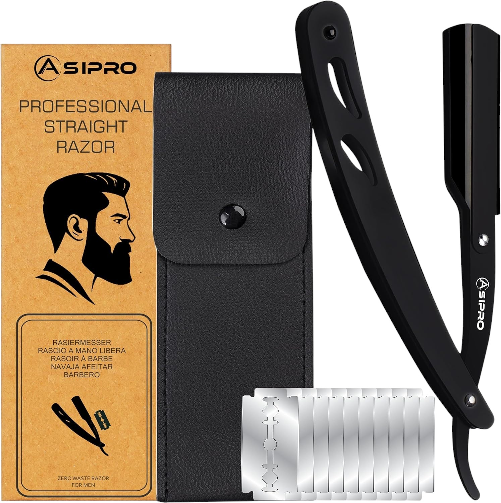

Produto recomendadoBancada organizada
TRU BARBER Tapete Organizador
Tapete de bancada para organizar ferramentas, reduzir ruido visual e proteger a estacao de trabalho. Boa escolha para barbeiros que querem uma bancada mais arrumada e com leitura mais profissional.
Antes de comprar
- Melhor para: Bancada organizada
- Ponto forte: melhora ordem visual do posto
- Vantagem adicional: cria base propria para ferramentas

Porque recomendamos este produto
Recomendamos o TRU BARBER Tapete porque define e protege a área de trabalho numa bancada de barbeiro — mantém ferramentas no lugar, absorve pequenos respingos e dá um aspeto mais cuidado ao posto.
Para quem é
Tapete de bancada para organizar ferramentas, reduzir ruido visual e proteger a estacao de trabalho.
Onde faz sentido
Boa escolha para barbeiros que querem uma bancada mais arrumada e com leitura mais profissional.
Pontos fortes
- melhora ordem visual do posto
- cria base propria para ferramentas
- ajuda a dar aspeto mais cuidado a bancada
Limitações
- ocupa espaco fixo
- faz menos diferenca em setups muito pequenos
Loja afiliada
Comprar agora na Amazon.es
Confirma disponibilidade e avança para a compra com entrega rápida e pagamento seguro na plataforma.
Transparência: Alguns links nesta página são links de afiliado. O OndeCortar pode receber comissão por compras elegíveis.
Relacionados
Produtos relacionados

Fagaci Professional Hair Clippers
Boa leitura de maquina de corte profissional
